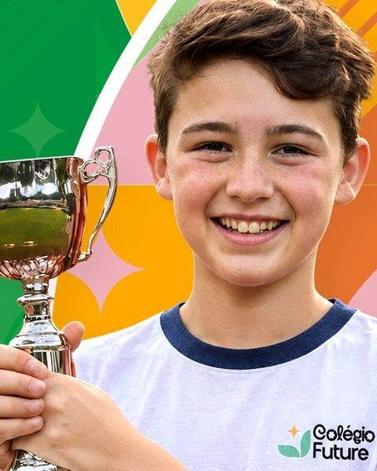
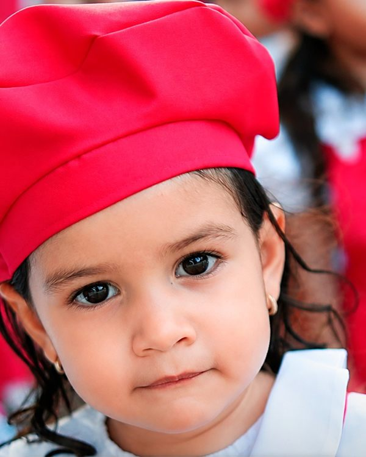
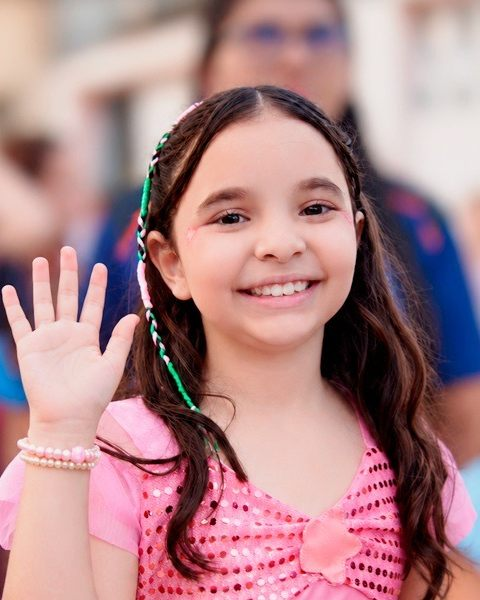
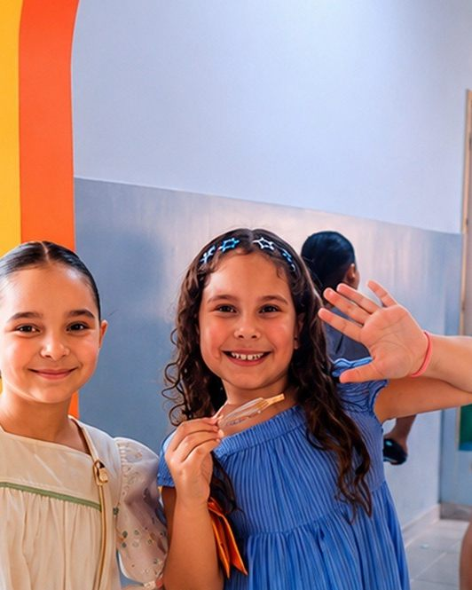
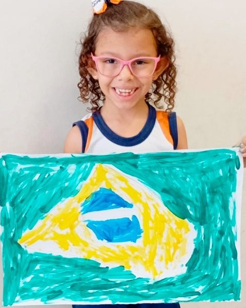
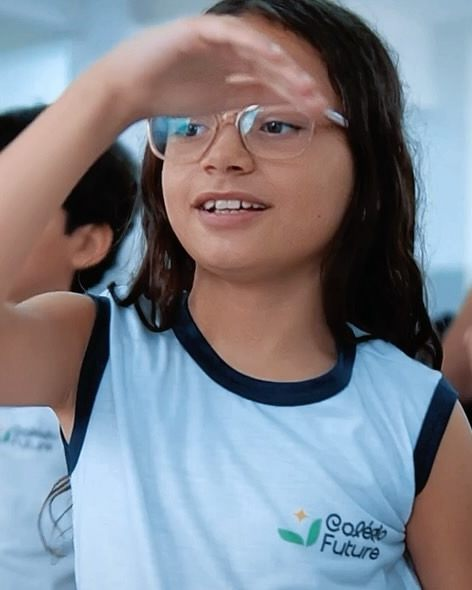
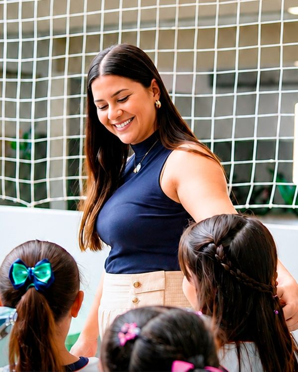

Sistema de ensino COC
Conhecimento e recursos pedagógicos em cada etapa da aprendizagem.
Aprender. Sentir. Descobrir.
Educação Infantil e Ensino Fundamental em Camocim. Um lugar para aprender, criar laços e crescer em cada experiência.
No coração de Camocim. De olho no futuro.
A gente aprende sentindo.
Conhecimento que faz sentido.
Experiências que ficam.
Prazer, somos o Future
No Centro de Camocim, o Colégio Future reúne Educação Infantil e Ensino Fundamental em uma proposta que conecta conhecimento, criatividade e desenvolvimento socioemocional.
Com o sistema de ensino COC e a Escola da Inteligência, aprender também é descobrir talentos, construir vínculos e participar do mundo.
Conheça a nossa escola
Avaliação Nacional · Plataforma COC
Em uma avaliação com mais de 11 mil participantes, nossos alunos foram destaque.
Cada etapa, novas possibilidades
Um percurso de aprendizagem da infância aos novos desafios do Ensino Fundamental.
Educação Infantil
Fundamental · Anos Iniciais
Fundamental · Anos Finais
Conhecimento que encontra a vida
Conhecimento e recursos pedagógicos em cada etapa da aprendizagem.
Emoções, convivência e desenvolvimento socioemocional.
Conversas e descobertas sobre escolhas no dia a dia.
Desafios que despertam a investigação e a curiosidade.
Criatividade e expressão para descobrir novos talentos.
Atividades que aproximam, movimentam e ensinam a cooperar.
Aprender fazendo
O universo é uma grande sala de aula.
Ideias que ganham altura.
Pensar também é uma aventura.
Cada talento tem seu lugar.
Aprender a jogar junto.
 Esporte
EsporteFamílias correndo juntas.
 Cívico
CívicoNossa história, nossa comunidade.
Histórias que abrem mundos.
A alegria de ser criança.
O Future acontece todos os dias
Projetos, atividades e vídeos da nossa rotina no Instagram.






Matrículas 2027
O próximo capítulo começa com uma conversa. Conheça a proposta da escola e tire suas dúvidas com a secretaria.
Pertinho de você
Rua da República, 194 · Centro
Camocim/CE · CEP 62400-000
Combine com a secretaria o melhor horário para sua visita.
Abrir rotas no Google Maps